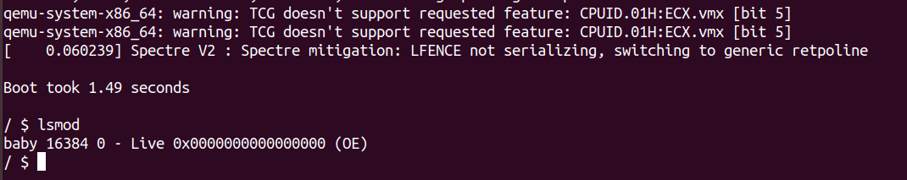
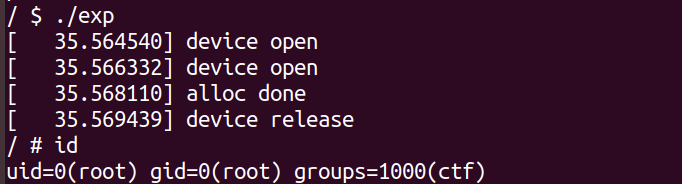
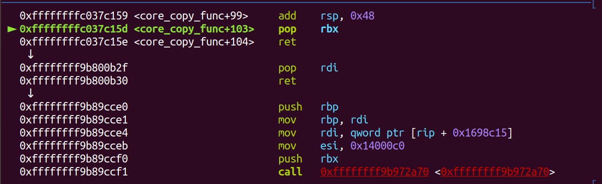
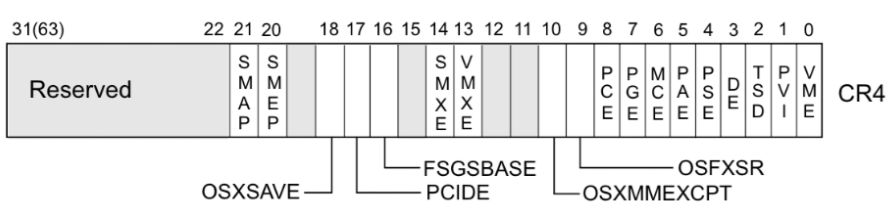
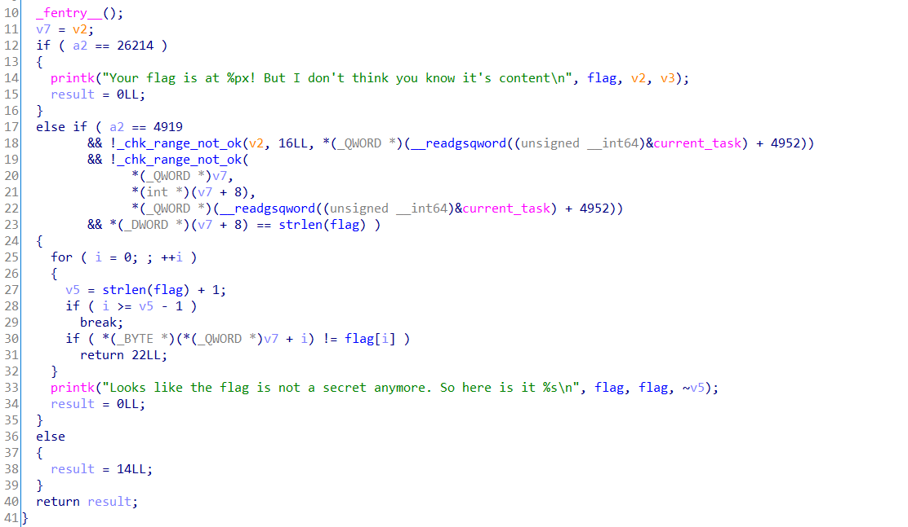
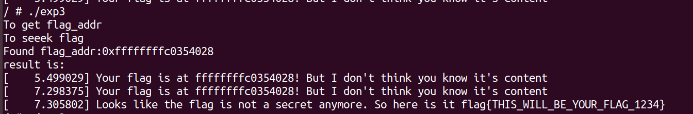

向 Kernel Pwn 学习前进，先学习一些基础知识，对这个方向有一个基础了解。PS：发现了 xmzyshypnc的宝藏博客，内容很全很多。
基础知识
目的
Kernel 题目通过远程登陆虚拟环境，本地一般使用 qemu根据提供的启动脚本启动虚拟环境，利用内核模块（一般是题目给的 *.ko 文件）中的漏洞，在目标系统中运行编写的 exploit程序，从而实现权限的提升。
题目形式
以 0ctf 2018 final baby 的题目进行一个大概说明：
一般题目会给如下文件：
1 | baby.ko #经压缩的内核文件 |
我们查看 start.sh如下：
1 | qemu-system-x86_64 \ |
参数说明如下：
1 | -initrd ./core.cpio #使用core.cpio 作为内核启动的文件系统 |
core.cpio：
对于 core.cpio这种文件系统，可以直接对其解压并重新压缩，从而修改这个系统的文件新建一个文件夹来解压：
1 | cpio -idmv < core.cpio |
解压后，可以发现其内部与一个Linux的系统文件夹结构类似。我们可以发现一个 init 文件，如下所示：
1 | #!/bin/sh |
其中 insmod baby.ko, 指定了该系统加载的内核模块，该模块即是出题者编写的有漏洞的驱动模块。我们需要对该模块进行动静态分析，发现漏洞并利用。
再次打包压缩命令如下：
1 | find . -print0 | cpio --null -ov --format=newc | gzip -9 > ../initramfs.cpio |
环境搭建
可以从此处下载内核文件。
然后，解压该文件后，执行如下命令：
1 | sudo make defconfig |
最终会编译生成一个 vmlinux内核文件。
调试方法
知道我们的目标模块后，我们就需要对该模块进行分析。静态分析，直接拖入IDA中即可。此处介绍动态分析方法：
我们可以在 start.sh 中加入 gdb 远程调试的参数：
1 | -gdb tcp::1234 |
然后启动该脚本，此时 qemu就会在 1234 端口启一个 gdb_server。
随后在 启动 gdb，分别设置如下参数：
1 | set architecture i386:x86-64:intel #设置gdb调试的系统架构为 i386 |
如果获得了模块的符号信息，可以在 gdb中加载模块，并进行下断调试。但是为了加载符号文件，首先需要在系统里获取驱动的加载基址，在系统里输入如下命令，可以查看模块的加载基址。如果是在非root用户下，lsmod命令不会得到驱动加载的地址，所以我们可以选择以root用户启动，并且在 root用户中来调试。
1 | lsmod |

在 gdb 中输入如下命令，加载 符号文件。这里地址是 0x0，只是为了示例。
1 | add-symbol-file baby.ko 0x0000000000000000 |
如果要下断点，可以用如下形式：
1 | b *0x0000000000000000+0x20 |
Kernel UAF
CISCN-babydriver
程序分析
这里的分析，基本都是踩的 xmzyshypnc学长的轮子。
首先使用 alloc_chrdev_region函数动态分配一个设备号，成功分配的话初始化一个cdev结构体（每个字符设备对应一个结构体），_class_create注册一个字符设备，创建相应的 class，再调用 device_create 创建对应的设备，每次失败都进行了回滚 destroy或者 unregister等。
1 | int __cdecl babydriver_init() |
_exit 是设备卸载的时候会调用，把分配的设备和 class等回收
1 | void __cdecl babydriver_exit() |
open函数的参数有inode和 filp，每个设备都会对应一个inode，而且分向一个 inode，这个不像 filp文件指针每次打开一个设备都会创建一个新的文件指针以供操作（内核里的文件指针，跟用户态不一样）：
1 | int __fastcall babyopen(inode *inode, file *filp) |
read函数是从内核往用户态读数据，kernel里的文件结构定义了一组基础接口，允许开发者按照参数的标准实现了一套自己的函数，read、write、open、release(close)都是自己实现的，这里的 read判断 babydev_struct.device_buf不为 NULL就将用户输入的第三个参数length长的数据从 device_buf拷贝到 Buffer里。
1 | ssize_t __fastcall babyread(file *filp, char *buffer, size_t length, loff_t *offset) |
write是从用户态拷贝length长的数据到 babydev_struct.device_buf里：
1 | ssize_t __fastcall babywrite(file *filp, const char *buffer, size_t length, loff_t *offset) |
ioctl是用户态调用内核驱动的函数，开发者可以在其中根据 arg参数决定对设备不同的操作，其中 command是一个唯一的数字，在新的标准里 command是有结构的，不同的位有不同的功能。如果 command是 0x10001，则释放 device_buf，再分配一个指定 size的内存地址赋给 device_buf：
1 | // local variable allocation has failed, the output may be wrong! |
release函数调用发生在关闭设备文件的时候，会free掉buf：
1 | int __fastcall babyrelease(inode *inode, file *filp) |
利用分析
程序漏洞点对我还是比较陌生的，是由于驱动并发处理不当，存在条件竞争漏洞。
开发驱动的时候，驱动必须是可重入的，也即是可以支持多次被打开的，这里 release的 kfree之后没有清空全局变量 babydev_struct.device_buf，全局变量在两次打开设备文件的时候是共享的，也即如果两次打开设备，在第一次 free掉 buf时，在第二次仍能继续读写数据。
一种简单方法是通过该版本的linux源码，获取 struct cred的大小（这里是 0xa8），在第一个设备操作中关闭文件 free掉 buf，再 fork一个新的进程，每次fork的时候会分配一个 struct cred结构体来标明进程的权限，这个结构体会将父进程的 cred复制过来，分配到的恰好是我们释放的结构体(slab分配器类似fastbin的分配方式 )，这时候在父进程里通过 write修改全局变量的 device_buf，实际上是修改 cred，我们把 uid改为0即可在子进程提权，之后在其中打开 shell 即可。
EXP
1 |
|
对exp进行编译，因为这个题目的kernel里面没有libc，所以这里我们静态编译exp:
1 | gcc exp.c -static -o exploit |
然后将 exploit直接放入解压的roofs目录中，然后再重新压缩打包：
1 | find . | cpio -o --format=newc > ../rootfs.cpio |

注意：这种攻击方式在新版本内核中已经失效，因为新进程的 cred结构体会有一个单独的区域进行申请，因此 UAF漏洞无法利用成功，这种新的特征叫做 lockdown。
Kernel ROP
QWB2018-Core
首先使用如下命令解压core.cpio：
1 | gunzip ./core.cpio.gz |
然后就可以正常使用 cpio -idmv < core.cpio进行解压。
程序分析
首先看一下文件core.cpio 里的一些重要配置，以前以为这里没啥重要信息，现在看来是自己想错了。首先看 Init文件：
1 | #!/bin/sh |
在第 9 行中，将 /proc/kallsyms 文件放入到了 /tmp/kallsyms文件下，那么后续就可以从 /tmp/kallsyms中读取 commit_creds，prepare_kernel_cred 的函数的地址了。
在第10行中，将 kptr_restrict设为1，这样就不能通过 /proc/kallsyms 直接查看函数地址，但是第9行中已经把信息保存到了一个可读文件中，这个保护就可以被绕过。
第11行中，把 dmesg_restrict设为1，就不能通过 dmesg查看 kernel的信息了；
第18行中，设置了定时关机，这里可以直接删掉即可。
再来看一下题目提供的 start.sh：
1 | qemu-system-x86_64 \ |
可以看到开启了 kaslr保护。
现在来分析一下 core.ko文件：
init_module中创建了虚拟文件 /proc/core，应用层通过该文件实现与内核的交互：
1 | __int64 init_module() |
在 core_ioctl中定义了三条命令，分别是 core_read()、设置全局变量 off以及core_copy_func()。其中全局变量是由用户传入的第三个参数设置。
1 | __int64 __fastcall core_ioctl(__int64 a1, int a2, __int64 a3) |
其中 core_read()函数，是将内核的数据拷贝到用户指定的用户空间中，拷贝的源地址由 off变量指定，拷贝大小为 64 字节。
1 | unsigned __int64 __fastcall core_read(__int64 a1) |
其中 core_copy_func函数 是将全局变量 Name的数据拷贝到 v2中，拷贝长度由用户输入参数 a1决定。这里对 a1进行了限制，不能超过 63。但是此处存在漏洞，我们输入的参数 a1是 int64类型，也就是可以输入负数，而 最终程序执行 qmemcpy时的 长度 a1却是 int16类型，也就是只截取了 int64的低2字节。也即存在一个栈溢出漏洞。
1 | __int64 __fastcall core_copy_func(__int64 a1) |
core_write函数是将数据从用户态拷贝到内核 全局变量name空间内，长度由 v3决定。
1 | __int64 __fastcall core_write(__int64 a1, __int64 a2, unsigned __int64 a3) |
core_release函数 和 exit_core函数意义不大。
此外，core.ko文件开启了 Canary保护。
利用分析
内核存在一个栈溢出，很容易想到利用ROP，但是内核 ROP与用户态下有一些不同。并且利用栈溢出时，我们首先得泄露 canary。
- 泄露 canary
我们首先得泄露内核栈上的canary，首先设置合适的 off值，再通过 core_read函数读取内核栈上的数据，泄露canary；
- 获取
gagdet地址
执行 ROP首先需要找到合适的 gadget，内核 gadget的寻找需要从 vmlinux文件获取，可以直接使用 ropper --file ./vmlinux > rops将寻找的 rop存放起来。如果题目没有直接给 vmlinux，也可以使用 extract-vmlinux进行提取，命令如下：
1 | ./extract-vmlinux ./bzImage > ./vmlinux |
有了偏移，我们还得确定内核运行基址。
- 构造 ROP
随后我们就可以利用 core_write函数，向全局变量 name中写入 ROP，ROP的主要功能是 执行 commit_creds(prepare_kernel_cred(0))进行提权。
TIPS
swapgs指令和 iretq指令：
swapgs 指令通过系统调用切入到 Kernel系统服务后，通过交换 IA32_KERNEL_GS_BASE与 IA32_GS_BASE的值，从而得到 Kernel数据结构的指针，其中 IA32_KERNEL_GS_BASE寄存器的是一个 MSR寄存器，用于保存 kernel 级别的数据结构指针。MSR(Model Specific Register)寄存器是为了设置CPU的工作环境和标识 CPU的工作状态等。
在执行 IRET指令时，如果返回到相同级别的任务，将从栈中弹出指令指针、代码段选择器和EFLAGS映像至 EIP、CS和 EFLAGS寄存器，然后继续执行被中断的程序或过程。如果返回到另一个权限级别则在恢复程序执行之前，还有从栈中弹出堆栈指针和SS。
所以从 Kernel space 返回到 user space，需要在栈中提前准备好rip、CS、EFLAGS、SS和 rsp。rip可以设置成 system('/bin/hs\x00')函数地址。
因此，需要先保存这些寄存器的状态：
1 | void save_status(){ |
获取函数地址
可以在 /tmp/kallsyms中获取到 commit_creds和 prepare_kernel_cred的函数地址，这里类似于泄露 libc，泄露一个地址然后减去它在 libc中的偏移就可以得到 libc_base，那么获取到这两个函数地址后，减去他们在 vmlinux的偏移，就可以获得 vmlinux_base，偏移可以利用 Pwntools获得：
1 | from pwn import * |
如上所示，commit_creds的偏移为 0x9c8e0，prepare_kernel_cred的偏移为 0x9cce0。
得到偏移后，我们只需要在 exp中去泄露 commit_creds或 prepare_kernel_cred等函数的地址，再减去偏移就可以获得 libc基址。
泄露canary
首先程序存在将内核空间v5[off]的数据输出到用户空间内，&v5 的地址是 rbp-0x50，可以将 off设置为 0x40，然后泄露 canary。
有一个数据格式转换，经常用到，即我们读取内核数据的缓冲区数据类型为 char buf[0x40]，将其转换为 size_t buf[8]后，buf[0]就是 canary的值。
1 | void set_off(int fd, long long idx){ |
构造rop
首先填充 canary和 ebp，接下来就是去执行 perpare_kernel_cread(0)。
1 | for(i=0;i<10;i++){ |
调试分析
首先修改 init文件，添加以下命令，以便获取 core.ko的代码段的基址，这样内核启动就是 root权限。这里只为了调试方便，执行exp可去掉：
1 | setsid /bin/cttyhack setuidgid 0 /bin/sh |
然后重新打包文件系统，运行 start.sh起内核，在qemu中查找 core.ko的 .text段的地址：
1 | / |
在另一个terminal中启动 gdb：
1 | gdb ./vmlinux -q |
然后添加 core.ko的符号表，加载了符号表之后就可以直接对函数名下断点：
1 | gdb-peda$ add-symbol-file ./core.ko 0xffffffffc0205000 |
最后使用gdb远程调试程序，用如下命令：
1 | target remote localhost:1234 |
最终，我们能看到开始执行我们的 ROP:

EXP
注意：这里的汇编写法是按照 x86汇编的写法，所以需要在编译时加上 -masm=intel
1 | //gcc exp.c -static -masm=intel -g -o exp |
ret2usr
ret2usr攻击利用了用户空间的进程不能访问内核空间，但内核空间能访问用户空间这个特性来定向内核代码或数据流指向用户空间，以 ring 0特权执行用户空间代码完成提权等操作。
我们可以在用户态构造好需要的函数，然后由内核直接调用即可。这里直接在 用户态写好 提权的函数，然后由内核态返回到用户态来 getshell。
1 |
|
bypass-smep
SMEP
为了防止 ret2usr攻击，内核开发者提出了 smep保护，全称 Suprevisor Mode Excution Protection，是内核的一种保护措施，作用是当 CPU 处于 ring0模式时，执行 用户空间的代码会触发页错误，这个保护在arm中被称为 PXN。
通过 qemu启动内核时的选项可以判断是否开启了smep保护：
1 | grep smep ./boot.sh |
smep和CR4寄存器
系统根据 CR4寄存器的值判断是否开启了 smep保护，当 CR4寄存器的第20位是1时，保护开启；是0时，保护关闭。（图来自Wiki)

例如，当
1 | $CR4 = 0x1407f0 = 000 1 0100 0000 0111 1111 0000 |
时，smep保护开启。而 CR4寄存器时可以通过 mov指令修改的，因此只需要：
1 | mov cr4, 0x1407e0 |
即可关闭 smep 保护。我们可以利用 gadget来获取即可。
gdb无法查看 cr4寄存器的值，可以通过 Kernel crash时的信息查看，为了关闭 smep保护，常用一个固定值 0x6f0，即 mov cr4, 0x6f0
CISCN2017-babydriver
先采用 关闭 smep，使用 ret2usr来提权。
这里选取的方法是先通过 tty_struct结构，在 open("/dev/ptmx", O_RDWR) 时会分配一个结构体：
tty_struct的源码如下：
1 | struct tty_struct { |
其中有一个 tty_operations结构体，这个结构体内有许多虚函数指针：
1 | struct tty_operations { |
因此，有点类似 FSOP的方法，构造如下结构。因为 tty_operations有 open、close和 ioctl等各种常用函数，我们可以修改这些函数的指针指向我们伪造的地址。
1 | fake_tty_struct fake_tty_operations |
EXP
这里在最后去调用 tty_opreations没有能够getshell，我调试了一下，但是没有想到什么办法直接在 对 fd_tty进行操作时断下来，希望后续能够学到更多的内核调试技巧。
1 |
|
Double Fetch
2018 0CTF Finals Baby Kernel
Double Fetch漏洞原理
Double Fetch漏洞属于条件竞争漏洞，一个用户态线程准备的数据通过系统调用进入内核，进入内核的时候进行安全检查（比如缓冲区大小、指针可用性等），当检查通过后进行实际处理之前，另一个用户态线程可以创造条件竞争，对已经将通过了检查的用户态数据进行篡改，是的数据在真实使用时造成访问越界或缓冲区溢出，最终导致内核崩溃或权限提升。
程序分析

程序总体逻辑不是太难，输入 26214时可以成功输出flag，输入 4919时可以会将用户输入的Flag与内存中的flag进行比较，如果长度相等，则逐字节比较是否相等，一致输出全部flag。
利用分析
- 首先利用
dmesg获取flag的地址
当我们执行 ioctl(0x6666)时，内核会将flag的地址使用 printk输出到缓冲区中。我们可以使用 dmesg来将缓冲区的数据输出到一个tmp下的文件中。然后再使用 open打开该文件，搜索获得 flag的地址。代码如下：
1 | size_t get_addr() |
- double fetch修改用户态数据
我们首先再次建立一个线程，然后再主线程中向内核中传入符合过滤要求的inputbuf。但是再子线程中却不断修改 inputbuf的buf指向内核的flag的地址。两个线程不断循环竞争，直到出现子线程把 inputbuf指向了flag地址，而主线程才进入flag比较阶段，就会成功。
然后依然使用 dmesg将内核缓冲区中的数据输出，得到 flag。
1 | //first input data |
EXP
1 |
|

2020-hxp-kernel-rop
程序分析
1 | ssize_t __fastcall hackme_write(file *f, const char *data, size_t size, loff_t *off) |
write函数有一个很明显的栈溢出漏洞。那么就可以执行 ROP,read函数也可以向下溢出读。即可泄露地址。不过这道题的难点，在于开启了各种保护：
smep：不能执行用户态代码，防止ret2user；
smap：不能执行用户态数据：在这道题会对覆写 modprobe_path有一定的干扰；
kpti：返回用户态时，会由于页错误，抱一个段错误。
FG_KASLR：开启了函数级别的 aslr，对于寻找 gadget挑战很大。
利用分析
这里，原文的做法是 遍历 ksymtab来 泄露出 各种想要的地址。但是我对于 这个 kasymtab了解还不够深，怎么遍历，其位置在哪，都不太清楚。所以直接采用自己最习惯的 覆写 modprobe_path的方法。
虽然开启了 FG-KASLR，但是我们仍然能够从栈上找到一个 不会改变偏移的地址，而 memcpy和 modporbe_path的偏移也都不变。
所以，这道题就大大健华。对于 仅需的几个 gadget，花了很多心思，这里是通过 在 偏移不变的函数里，搜索字节码，找到想要的 gadget。
对于 smap，所以这里 不能直接将 /tmp/chmod.sh放到用户态，而是要把它放到内核的栈上。
最终执行 ROP如下：
1 | p_rdi_r; |
EXP
1 | // gcc -static -pthread exp.c -g -o exp |
总结
Kernel算是和我以前做的Glibc有很大不同，虽然做的每道题的EXP都看着不是很长，原理也并不是太高深。但是写一个EXP我却要改好久，原因我想有两点：一是C语言已经忘记太多了，一写就会出错，后面还是得捡起来呀；二是内核调试太麻烦，没有做到每道题都想 Glibc这样细致的调试，而且像多线程这种调试我到现在还没有想到好的办法。学了这么多收获很多，但是也给我一种感觉学得不够牢固，很可能一道比赛又会因为无法调试EXP不对，而宕机。以后希望从C语言逐步深入学习更多的东西。不过，这确实很有趣，让我感觉至少对调试Linux的CVE有了一个入门的感觉，To pwn for fun 太棒了。
参考


- 本文作者： A1ex
- 本文链接： http://yoursite.com/2020/11/06/KernelPwn入门学习/
- 版权声明： 本博客所有文章除特别声明外，均采用 MIT 许可协议。转载请注明出处！